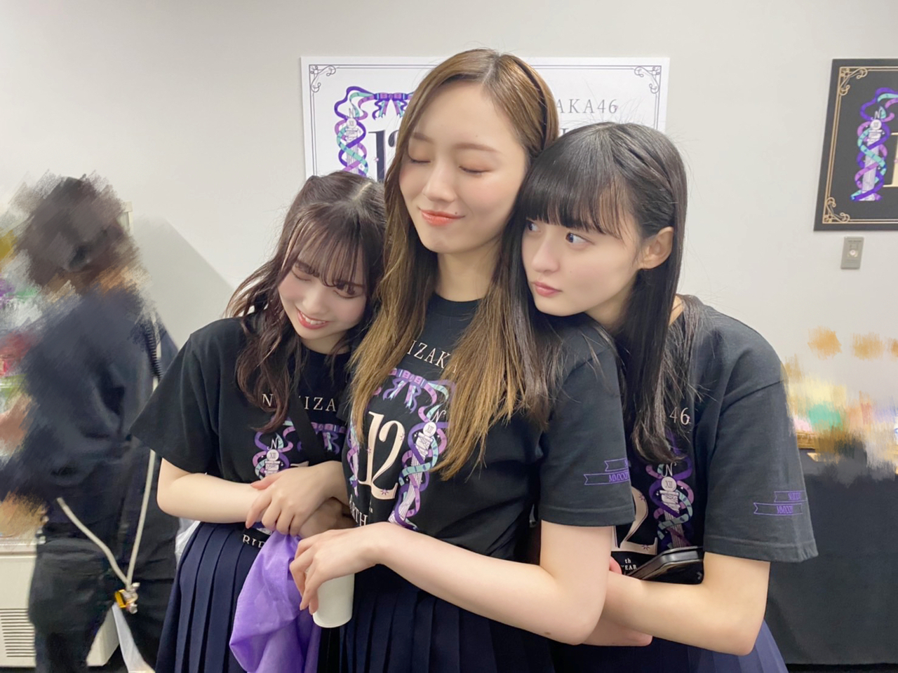
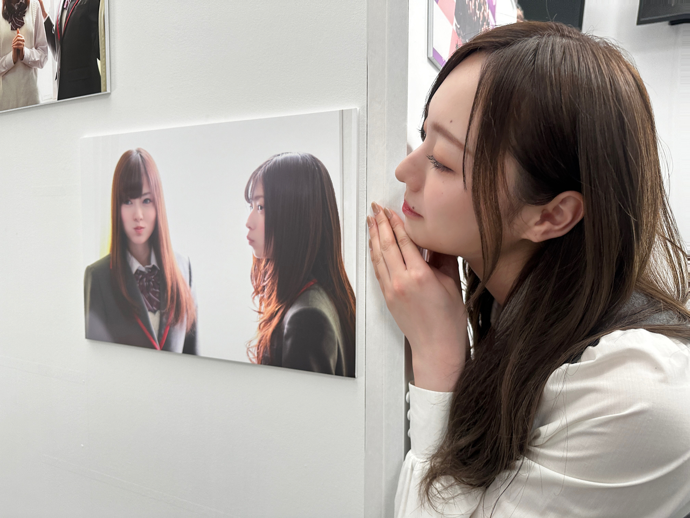
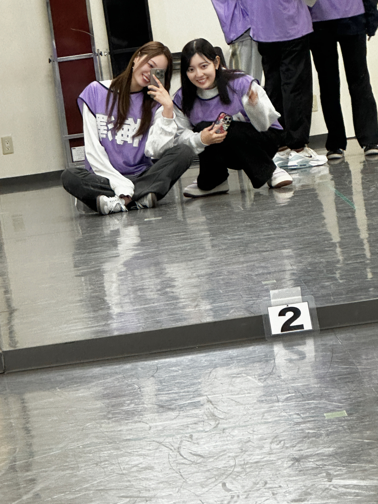
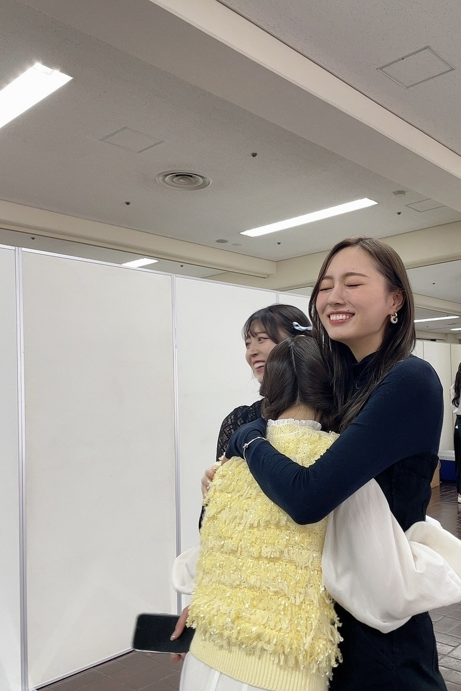

未来の仲間たちに
乃木坂４６ ６期生オーディション、
夏組の募集がスタートいたしました。
春のオーディションを
受けてくださった方、
たくさんいたと聞いてます！
受けてくださった皆様、
本当にありがとうございました。
https://www.nogizaka46.com/s/n46/diary/detail/102264?ima=5124&cd=MEMBER
伝えたいことはぜんぶ
春のオーディションのときに
書いたのだけど、、
一番伝わるのかな、とか
理解してあげられたり
背中を押すことができたり
温度の近い言葉を見つけてもらえる気がして
少しでも誰かに、響くといいなと思って
またすこしつらつらと、
伝えたいこと書きます(^^)
６期生オーディションの開催が発表されてから
迷っています、とか
応募してみました、とか
たくさんメッセージいただきました
文面のメッセージからでも
不安が滲み出ているような
そんな雰囲気を感じ取れるくらい
悩んでくれているみたいで。
本当にありがとうございます！
少しわたしがオーディションを受けた
当時のことをリアルに振り返ると。
わたし、今は乃木坂４６のキャプテンを
やらせていただいていて
皆さんが見る表舞台に立つ姿は
たくさん喋るし
なんか賑やかな人だなあと
思われているんじゃないかなあと、
そんな気がしているのだけど
オーディションの二次審査で
審査員の方々と面接をしたときに
不安というよりも、まず、
人前で自分をアピールすることがあまりにも苦手で
経験が無くて、泣きました（笑）
同期のみんなに当時の私のことを聞くと
背が高くて 服も真っ黒で 一人でいて
怖かった、とか言われるけど
そんな強そうな見た目でも、内心びびりまくりでした（笑）
こんな私も
すごく弱かったんですよねえ
今や、色々乗り越えて 経験して 察して
場に応じて自分の在り方を変えられるくらいには
強くなれました！
段階を経て、心は変わっていきました(^^)
人が強くなる瞬間とか
なにか一個、それを乗り越えた瞬間とか
明確に変わったなあ〜！ってタイミングがみんなにあって、
人が強くなる、変わるって 、
そんなタイミングがある人生って
すごいなあと思うし、
それはどんな場所でも自分と環境次第で訪れるものかもしれないけど、私は
それを経験できた場が
私の大好きな乃木坂で良かったなあと、
感じています。
容量以上のものを背負ったり
経験して、失敗したり
自分に絶望したり
そんなとき、周りが見ててくれて
後々優しさに気づけたり
人として、色んなこと学べるし
色んなものの見え方が変わりました(^^)
もし、落ちてしまったとしても
このオーディションに足を踏み出せたことや
ここまでの勇気と自分への意思は
無駄にならないし、
オーディションを受けてくれる皆様にとって
良い経験のひとつになったらいいなあと
思っています。
どんな子がいますか？
みんなどんな雰囲気ですか？
って
たくさん聞いちゃいました(^^)
新しく入ってきてくれる子達に
みんな興味津々です
わくわくしています！




楽しみに待っています(^^)
https://nogizaka46audition.com/
また、書きます！
Original：https://www.nogizaka46.com/s/n46/diary/detail/102601?ima=4930&cd=MEMBER